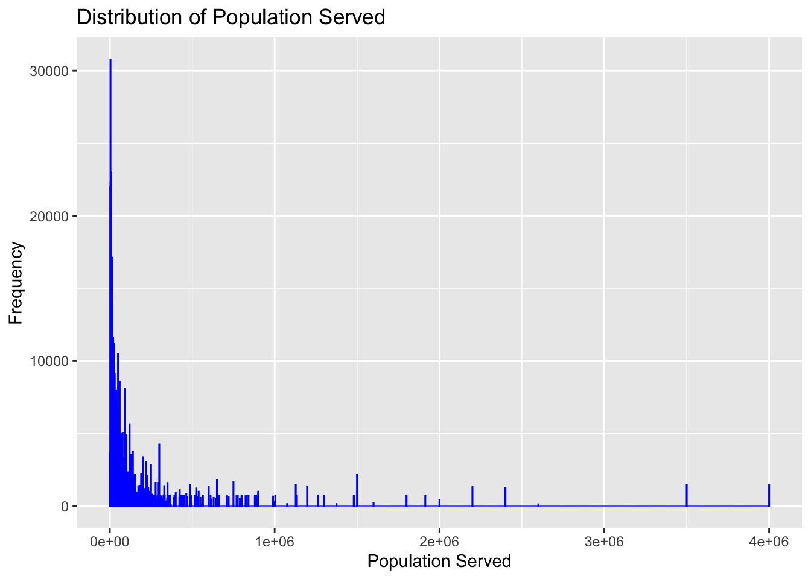
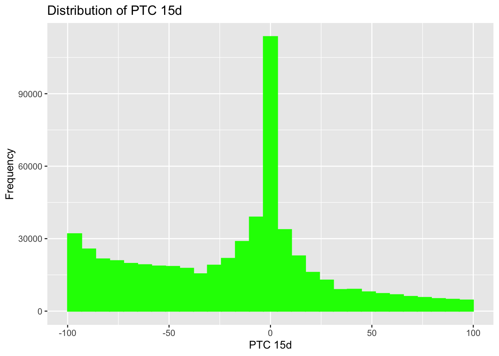
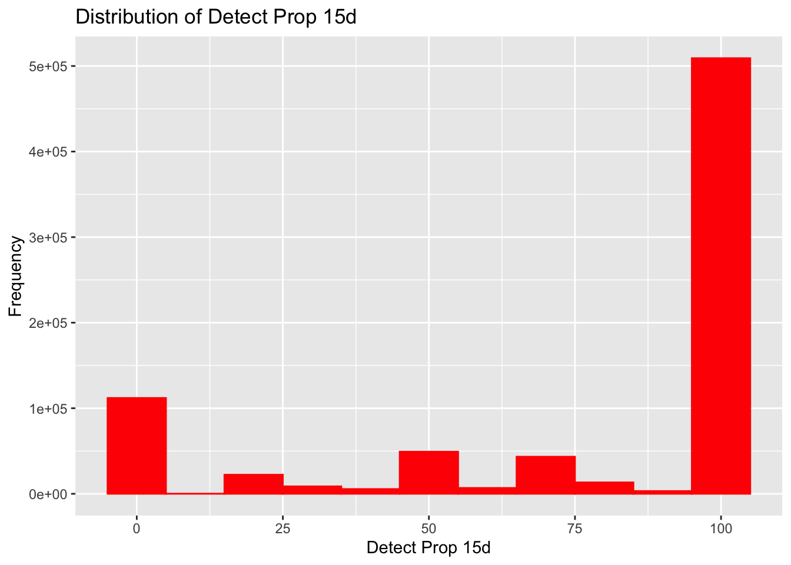
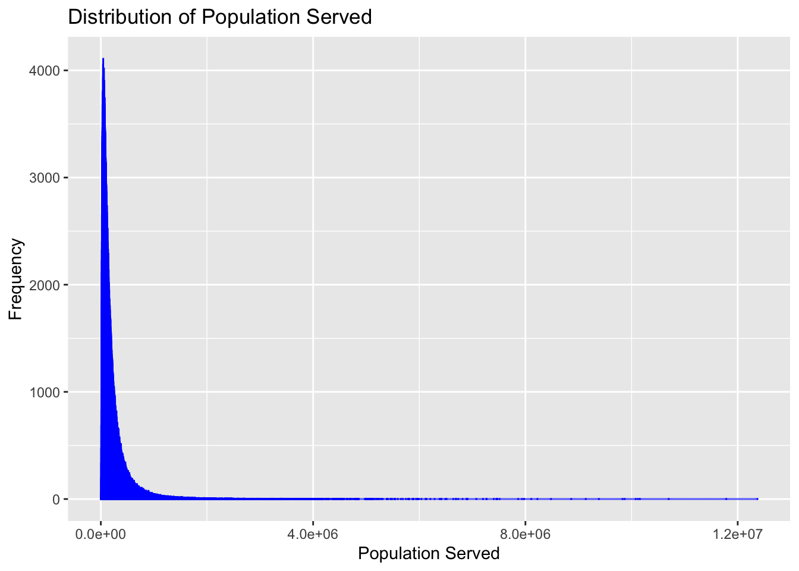
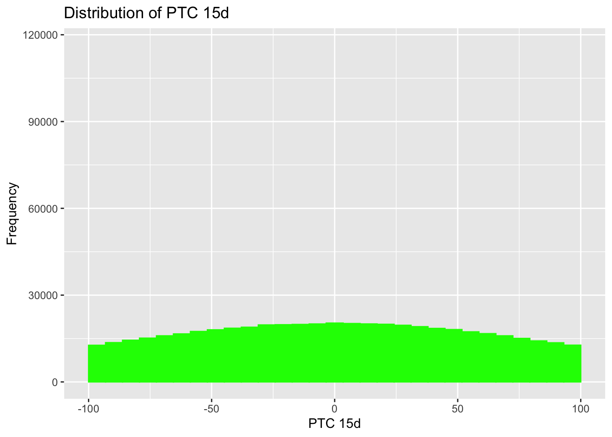
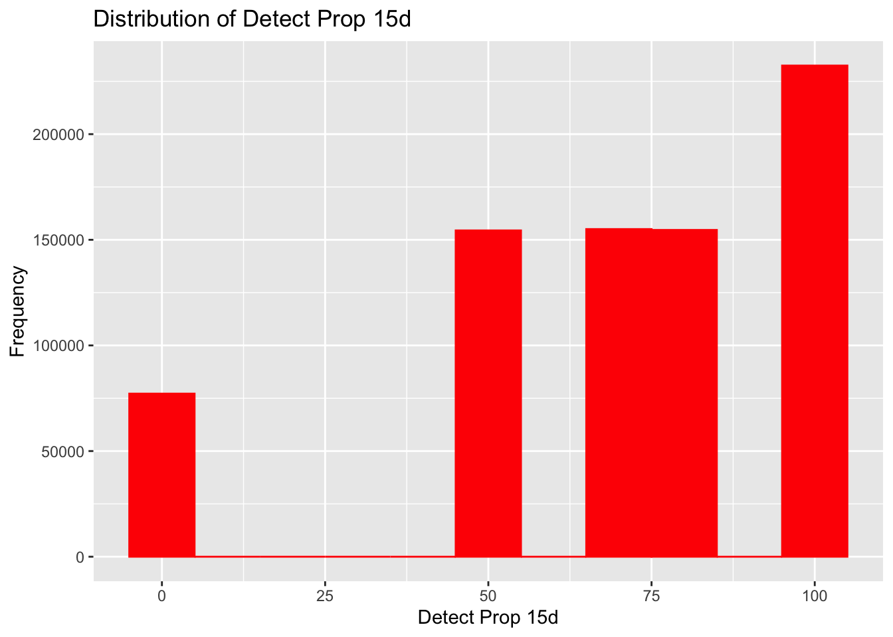

The data that I have chosen for this exercise is the NWSS Public SARS-CoV-2 Wastewater Metric Data from the CDC. The link to the website can be found here. ChatGPT and GitHub Copilot were both used to fine-tune the code below.
#Load required packageslibrary(tidyverse)
── Attaching core tidyverse packages ──────────────────────── tidyverse 2.0.0 ──
✔ dplyr 1.1.4 ✔ readr 2.1.5
✔ forcats 1.0.0 ✔ stringr 1.5.1
✔ ggplot2 3.5.1 ✔ tibble 3.2.1
✔ lubridate 1.9.4 ✔ tidyr 1.3.1
✔ purrr 1.0.2
── Conflicts ────────────────────────────────────────── tidyverse_conflicts() ──
✖ dplyr::filter() masks stats::filter()
✖ dplyr::lag() masks stats::lag()
ℹ Use the conflicted package (<http://conflicted.r-lib.org/>) to force all conflicts to become errors
library(here)
here() starts at /Users/alexisgonzalez/Desktop/MADA/connornorris-MADA-portfolio
library(ggplot2)library(janitor)
Attaching package: 'janitor'
The following objects are masked from 'package:stats':
chisq.test, fisher.test
This dataset was initially too big to fit within Git’s file size guidelines. To reduce file size, I cut some redundant variables as well as restricted the data to only include observations from 2023 and 2024.
#Code to reduce data to acceptable size for Git#data_path <- here("cdc-data-exercise", "NWSS_Public_SARS-CoV-2_Wastewater_Metric_Data_20250206.csv")#ww <- read_csv(data_path)#ww <- ww %>%#select(!c(key_plot_id, sample_location_specify, reporting_jurisdiction)) %>% #filter(date_start >= as.Date("2023-01-01") & date_start <= as.Date("2024-12-31"))#write.csv(ww, 'wastewater.csv', row.names = FALSE)
Rows: 773779 Columns: 13
── Column specification ────────────────────────────────────────────────────────
Delimiter: ","
chr (5): wwtp_jurisdiction, sample_location, county_names, county_fips, sam...
dbl (5): wwtp_id, population_served, ptc_15d, detect_prop_15d, percentile
date (3): date_start, date_end, first_sample_date
ℹ Use `spec()` to retrieve the full column specification for this data.
ℹ Specify the column types or set `show_col_types = FALSE` to quiet this message.
Rows: 1 Columns: 6
── Column specification ────────────────────────────────────────────────────────
Delimiter: ","
chr (1): Variable
dbl (5): Mean, SD, Min, Max, Median
ℹ Use `spec()` to retrieve the full column specification for this data.
ℹ Specify the column types or set `show_col_types = FALSE` to quiet this message.
Rows: 1 Columns: 6
── Column specification ────────────────────────────────────────────────────────
Delimiter: ","
chr (1): Variable
dbl (5): Mean, SD, Min, Max, Median
ℹ Use `spec()` to retrieve the full column specification for this data.
ℹ Specify the column types or set `show_col_types = FALSE` to quiet this message.
Rows: 1 Columns: 6
── Column specification ────────────────────────────────────────────────────────
Delimiter: ","
chr (1): Variable
dbl (5): Mean, SD, Min, Max, Median
ℹ Use `spec()` to retrieve the full column specification for this data.
ℹ Specify the column types or set `show_col_types = FALSE` to quiet this message.
ptc_15d_summary <-read_csv("ptc_15d_summary.csv")
Rows: 1 Columns: 6
── Column specification ────────────────────────────────────────────────────────
Delimiter: ","
chr (1): Variable
dbl (5): Mean, SD, Min, Max, Median
ℹ Use `spec()` to retrieve the full column specification for this data.
ℹ Specify the column types or set `show_col_types = FALSE` to quiet this message.
Min. 1st Qu. Median Mean 3rd Qu. Max.
-100 -44 0 3101931 75 2147483647
#Plot distributions of continuous variablesggplot(df, aes(x = population_served)) +geom_histogram(binwidth =1000, fill ="blue", color ="blue") +labs(title ="Distribution of Population Served", x ="Population Served", y ="Frequency")

ggplot(df, aes(x = ptc_15d)) +geom_histogram(fill ="green", color ="green") +xlim(-100, 100) +labs(title ="Distribution of PTC 15d", x ="PTC 15d", y ="Frequency")
`stat_bin()` using `bins = 30`. Pick better value with `binwidth`.
Warning: Removed 175282 rows containing non-finite outside the scale range
(`stat_bin()`).
Warning: Removed 1 row containing missing values or values outside the scale range
(`geom_bar()`).

ggplot(df, aes(x = detect_prop_15d)) +geom_histogram(binwidth =10, fill ="red", color ="red") +labs(title ="Distribution of Detect Prop 15d", x ="Detect Prop 15d", y ="Frequency")

ggplot(df, aes(x = percentile)) +geom_histogram(binwidth =5, fill ="purple", color ="purple") +labs(title ="Distribution of Percentile", x ="Percentile", y ="Frequency")
[1] Arizona Michigan Texas
[4] Pennsylvania Maine New Jersey
[7] New York Oklahoma Virginia
[10] Wisconsin Colorado New York City
[13] Utah Washington West Virginia
[16] California Illinois New Hampshire
[19] Florida Hawaii Maryland
[22] Missouri Oregon Louisiana
[25] Vermont Indiana North Carolina
[28] Rhode Island Ohio South Carolina
[31] Minnesota Kansas Georgia
[34] Massachusetts Arkansas Nebraska
[37] Nevada Alabama Montana
[40] Connecticut Delaware New Mexico
[43] Kentucky Wyoming Tennessee
[46] District of Columbia Iowa Alaska
[49] Idaho South Dakota Mississippi
51 Levels: Alabama Alaska Arizona Arkansas California Colorado ... Wyoming
unique(df$county_names)
[1] Maricopa
[2] Ottawa
[3] Dallas
[4] Kalamazoo
[5] Butler
[6] Penobscot
[7] Bergen
[8] Cumberland
[9] Delaware
[10] Muskogee
[11] Virginia Beach City,Chesapeake City
[12] Marathon
[13] Summit
[14] Queens
[15] Dauphin
[16] Tazewell
[17] Island,Snohomish
[18] Ohio
[19] Santa Cruz
[20] Saint Clair
[21] Sullivan
[22] Chautauqua
[23] Pinellas
[24] Honolulu
[25] Du Page
[26] Anne Arundel
[27] Salem
[28] Riverside
[29] Cole,Callaway
[30] Westchester
[31] Multnomah
[32] Umatilla
[33] La Crosse
[34] Dunn
[35] Lafayette
[36] Addison
[37] Mohave
[38] Marion
[39] Otsego
[40] Durham,Orange
[41] New Hanover
[42] Forsyth
[43] Allegheny
[44] Los Angeles
[45] San Francisco,San Mateo
[46] Monmouth
[47] Bristol
[48] Butte
[49] St Joseph
[50] Vanderburgh
[51] Huron
[52] Skagit
[53] Santa Clara
[54] Hamilton
[55] Saint Louis
[56] Knox
[57] Hampton
[58] Horry
[59] El Paso
[60] Kane
[61] Terrebonne
[62] Union
[63] Genesee
[64] Isanti
[65] Albany
[66] Pierce
[67] Salt Lake
[68] Sonoma
[69] Orange
[70] Boone
[71] Jefferson
[72] Mecklenburg
[73] Erie
[74] Yamhill
[75] El Dorado
[76] Shawnee
[77] Fulton
[78] Cache
[79] Fairfax,Alexandria City
[80] Yakima
[81] Clayton
[82] Seneca
[83] Newport
[84] Milwaukee,Ozaukee
[85] Somerset
[86] Contra Costa
[87] Ouachita
[88] Suffolk,Middlesex
[89] Sandusky
[90] Portsmouth City,Isle Of Wight,Chesapeake City,Suffolk City
[91] Cabell
[92] Mason
[93] Greene
[94] Lincoln
[95] Santa Barbara
[96] Dunklin
[97] Lancaster
[98] Utah
[99] Carson City
[100] Niagara
[101] Ontario
[102] Saint Tammany
[103] Grafton
[104] Columbia
[105] Dutchess
[106] Pontotoc
[107] Clark
[108] Sumter
[109] Houston
[110] Vigo
[111] Saint Mary
[112] Essex
[113] Hill
[114] Wake
[115] Lawrence
[116] Georgetown
[117] San Juan,Grand
[118] Walworth
[119] Milwaukee,Ozaukee,Racine,Waukesha,Washington
[120] Mineral
[121] Orleans
[122] Goodhue
[123] Pulaski
[124] Yuma
[125] Pima
[126] La Plata
[127] Elkhart
[128] Suffolk,Middlesex,Norfolk
[129] Kent
[130] Gratiot
[131] Rensselaer
[132] Providence
[133] De Kalb
[134] Chippewa
[135] Eaton
[136] Johnson
[137] Hardin
[138] Pender,Duplin
[139] Washington
[140] Broward
[141] Marquette
[142] Hennepin
[143] Clay
[144] Monroe
[145] Wyandot
[146] King,Snohomish
[147] Noble
[148] Suffolk
[149] Fairfield
[150] Snohomish
[151] Burlington
[152] Wyoming
[153] Philadelphia
[154] Arapahoe,Adams
[155] New Castle
[156] La Salle
[157] Scott,New Madrid
[158] Otero
[159] Schenectady
[160] Saint Lawrence
[161] Andrews
[162] Kanawha
[163] Travis
[164] Wayne
[165] Sussex
[166] Rockingham
[167] Centre
[168] Bedford City,Lynchburg City,Amherst,Bedford,Campbell
[169] Randolph
[170] Plumas
[171] Muskegon
[172] Nobles
[173] Montgomery
[174] Chelan
[175] Boulder
[176] Grand Traverse
[177] Kewaunee,Brown
[178] Madison
[179] Houghton
[180] Park
[181] Payne
[182] Hampton City,Newport News City,York,James City
[183] Richmond
[184] Macon
[185] Miami-Dade
[186] Carlton,Saint Louis
[187] Onslow
[188] Marin
[189] Acadia
[190] Aroostook
[191] Kings
[192] Stafford
[193] Hampton City,Newport News City
[194] San Luis Obispo
[195] Jackson
[196] Tompkins
[197] Livingston
[198] Webb
[199] Sangamon
[200] Bienville
[201] Preston
[202] Rock
[203] Shelby
[204] Platte,Clay
[205] Schoharie
[206] Benton
[207] Macomb
[208] Mahoning
[209] Guilford
[210] Mclennan
[211] Douglas
[212] Sheridan
[213] Jessamine
[214] Warren
[215] Laramie
[216] Catoosa,Walker,Dade,Hamilton
[217] Lee
[218] Solano
[219] Fairfax,Prince Georges,District Of Columbia,Loudoun,Montgomery,Arlington
[220] Winnebago
[221] Marshall
[222] Buncombe,Henderson
[223] Cheshire
[224] Kershaw
[225] Harris
[226] King,Pierce
[227] Isabella
[228] Stanislaus
[229] Arenac
[230] Chemung
[231] Mercer
[232] Nueces
[233] New Haven
[234] Vernon
[235] Jackson,Cass
[236] Bryan
[237] Hunterdon
[238] Lorain
[239] Cook
[240] Tippecanoe
[241] Calloway
[242] Garland
[243] Franklin
[244] Carbon
[245] Caddo
[246] York
[247] Outagamie,Winnebago,Calumet
[248] Martinsville City,Henry
[249] East Feliciana
[250] Brown
[251] Shasta
[252] Oswego
[253] Otter Tail
[254] Middlesex,Somerset,Union
[255] Oneida
[256] Lane
[257] Weber,Davis
[258] Kenosha
[259] Schoolcraft
[260] Saginaw
[261] Rockland
[262] Hawaii
[263] Tuscaloosa
[264] Le Sueur,Scott
[265] Henry
[266] Tarrant
[267] Fond Du Lac
[268] Sherburne,Benton,Stearns
[269] Juneau
[270] Warrick
[271] Lewis And Clark
[272] Josephine
[273] Victoria
[274] Iroquois
[275] Champaign
[276] Lake
[277] Boyd
[278] Nassau
[279] Deschutes
[280] Greenwood
[281] Alachua
[282] Lucas
[283] Saint Marys
[284] Napa
[285] Mcdonough
[286] Calhoun
[287] Island
[288] Bulloch
[289] Clare
[290] Lyon
[291] Henderson
[292] Washtenaw
[293] Weld
[294] Hudson
[295] Kendall
[296] Vermilion
[297] Richland
[298] Sherburne
[299] Loudoun
[300] Coconino
[301] Peoria
[302] Tulsa
[303] Klamath
[304] Muscatine
[305] Oakland,Wayne
[306] Johnson,Jackson,Cass
[307] Dent
[308] Nemaha
[309] Cabell,Wayne
[310] Windsor
[311] Concordia
[312] Saratoga
[313] Clackamas
[314] Alameda
[315] Oxford
[316] San Diego
[317] Jasper
[318] Dickinson
[319] Northampton,Halifax
[320] Strafford
[321] Morris
[322] Portage
[323] Sarasota
[324] Leon
[325] Waupaca
[326] Perry
[327] Reno
[328] Ulster
[329] Hidalgo
[330] Bedford City,Botetourt,Roanoke,Bland,Salem,Roanoke City,Bedford
[331] Lenoir
[332] Platte
[333] Licking
[334] Ada
[335] Waldo
[336] Bay
[337] Le Sueur
[338] Monongalia
[339] Emmet
[340] Newport News City,York,New Kent,Williamsburg City,James City
[341] Sweetwater
[342] Yankton
[343] Martin,Palm Beach
[344] Westmoreland
[345] Mckean
[346] Norton City,Wise
[347] Henrico
[348] Frederick,Winchester City
[349] Saint Bernard
[350] Monterey
[351] Hillsborough
[352] Floyd
[353] Cobb
[354] Carter
[355] Scott,Hennepin,Carver
[356] Essex,Union
[357] Radford,Montgomery,Pulaski
[358] La Paz
[359] Waukesha,Jefferson
[360] Saint Louis,Jefferson
[361] Duchesne
[362] Waukesha
[363] Onondaga
[364] Hampden
[365] Plaquemines
[366] Buffalo
[367] Anchorage
[368] Ventura
[369] Rowan
[370] Iberia
[371] Macomb,Wayne
[372] Forsyth,Guilford,Randolph,Davidson
[373] Polk
[374] Evangeline
[375] Dawes
[376] Olmsted
[377] Tangipahoa
[378] Tuscola
[379] Dodge,Washington
[380] Wyandotte
[381] Latah
[382] Washoe
[383] Pike
[384] Berkeley,Dorchester,Charleston
[385] Bronx
[386] Kern
[387] Arapahoe
[388] Natchitoches
[389] Anoka,Hennepin,Dakota,Ramsey,Washington
[390] Atlantic
[391] Harrisonburg City,Rockingham
[392] Peach
[393] Beauregard
[394] Scioto
[395] Utah,Salt Lake
[396] Fairfax,Alexandria City,Arlington,Falls Church City
[397] Palm Beach
[398] Rock Island
[399] Allen
[400] West Baton Rouge
[401] Christian
[402] Silver Bow
[403] Alleghany
[404] Fresno
[405] Smith
[406] Stark
[407] Dakota,Woodbury,Union
[408] Howell
[409] Luna
[410] Beaufort
[411] Uintah
[412] Russell
[413] Wapello
[414] Scotland
[415] New York
[416] Canadian
[417] Wasatch
[418] Davis
[419] Iron
[420] Kootenai
[421] Morgan
[422] Green
[423] Jo Daviess
[424] Wilson
[425] Kittitas
[426] Grant
[427] Hall
[428] Placer
[429] Paulding
[430] Johnson,Jackson,Wyandotte
[431] Carteret
[432] Westmoreland,Armstrong
[433] Spokane
[434] Garfield
[435] Oklahoma
[436] Dane
[437] Merced
[438] Bernalillo
[439] Pitkin
[440] Pitt
[441] Putnam
[442] Routt
[443] San Bernardino
[444] Manitowoc
[445] Mille Lacs
[446] Sheboygan
[447] Chittenden
[448] Newton
[449] Carroll
[450] San Francisco
[451] Thurston
[452] Mchenry
[453] Pennington
[454] Durham
[455] Mono
[456] Bartholomew
[457] Kennebec
[458] Hood River
[459] Allegan
[460] Saint Louis,Saint Charles
[461] Doddridge
[462] El Dorado,Nevada,Placer
[463] New London
[464] Manistee
[465] Saint Charles
[466] Cumberland,Oxford,Belknap,Carroll
[467] Macoupin
[468] Teton
[469] Freeborn
[470] Clinton
[471] Ashtabula
[472] San Joaquin
[473] Dubois
[474] Delta
[475] Cuyahoga
[476] San Mateo
[477] Orange,Seminole
[478] Midland
[479] Dona Ana
[480] Sandoval
[481] Lackawanna
[482] Essex,Hudson,Union,Passaic,Bergen
[483] Blue Earth
[484] Norfolk City
[485] Worcester
[486] Ventura,Los Angeles
[487] Whiteside
[488] Dodge
[489] Effingham
[490] Colbert
[491] Bureau
[492] Kanabec
[493] Yates
[494] Galveston
[495] Sutter
[496] Stanton,Madison
[497] Marlboro
[498] Box Elder
[499] Iosco
[500] Lewis
[501] Chenango
[502] Lexington
[503] Volusia
[504] Kandiyohi
[505] Trumbull
[506] Whitman
[507] Muscogee,Chattahoochee
[508] Blue Earth,Nicollet
[509] Laclede
[510] Cherokee
[511] Frederick
[512] Orange,Pinellas
[513] Cortland
[514] Hocking
[515] Garrett
[516] San Benito
[517] Defiance
[518] Wichita
[519] Holt
[520] Wasco
[521] Tillamook
[522] Wood
[523] Fayette
[524] Linn
[525] Passaic
[526] Alamosa
[527] Audrain
[528] Broome
[529] Schuyler
[530] Henrico,Richmond City,Goochland
[531] Lehigh
[532] Barry
[533] Tioga
[534] Herkimer
[535] Mesa
[536] Dakota
[537] Anderson
[538] Albemarle,Charlottesville City
[539] Lafourche
[540] Bossier
[541] Lenawee
[542] Clarke
[543] Crawford
[544] Portage,Summit
[545] Piscataquis
[546] Del Norte
[547] Buchanan
[548] Mcdowell
[549] Chester
[550] Cumberland,Prince Edward
[551] Sagadahoc
[552] Stephenson
[553] Red River
[554] Horry,Columbus
[555] Kankakee
[556] Kaufman,Collin,Dallas
[557] Belmont
[558] Gregg
[559] Marathon,Wood
[560] Athens
[561] Taylor
[562] Scott,Cape Girardeau
[563] Gogebic
[564] Greene,Christian
[565] Maui
[566] Saint Louis,Saint Louis City
[567] Richland,Lexington
[568] Harrison
[569] Chisago
[570] Barry,Lawrence
[571] Northampton,Bucks
[572] Yolo
[573] Petersburg City
[574] Williams
[575] Tooele
[576] Santa Cruz,Monterey
[577] Gallatin
[578] Hampton City,Newport News City,York,Gloucester,Mathews,Poquoson City
[579] Middlesex
[580] Humboldt
[581] Rice,Dakota
[582] Stafford,Prince William
[583] Santa Fe
[584] Scott,Hennepin,Dakota
[585] Scotts Bluff
[586] Steuben
[587] Saline
[588] Androscoggin
[589] Pueblo
[590] Tuscarawas
[591] Saint Croix,Pierce
[592] Nevada
[593] Mackinac
[594] Brazos
[595] Saint Croix
[596] Swain,Jackson
[597] Worcester,Providence,Norfolk
[598] Walla Walla
[599] Medina
[600] Sacramento
[601] Barbour
[602] Fairbanks North Star
[603] Escambia
[604] Watauga
[605] Denver
[606] Scott
[607] Sarpy,Douglas
[608] Cleveland
[609] Prince William,Fairfax
[610] Coshocton
[611] Randall,Potter
[612] Muskingum
[613] Clatsop
[614] Chippewa,Eau Claire
[615] Suffolk,Middlesex,Worcester,Plymouth,Norfolk
[616] Cattaraugus
[617] San Miguel
[618] Kenton
[619] Essex,Hudson,Passaic,Bergen
[620] Darke
[621] Pleasants
[622] Will
[623] Howard
[624] Seminole
[625] Coos
[626] Mercer,Trumbull
[627] Saint Johns
[628] Gwinnett
[629] Oakland,Macomb
[630] Chaves
[631] Hays
[632] Beadle
[633] Baraga
[634] Camden
[635] Malheur
[636] Indiana
[637] Morrison
[638] Prince William,Fairfax,Fauquier,Loudoun,Fairfax City,Manassas City,Manassas Park City
[639] Kosciusko
[640] Calcasieu
[641] Hancock
[642] Pickaway
[643] Adams
[644] Woodward
[645] Cayuga
[646] Preble
[647] Dougherty
[648] Webster
[649] Menominee
[650] Ashland
[651] Marinette
[652] Cass
[653] Virginia Beach City,Norfolk City,Portsmouth City,Chesapeake City
[654] Dodge,Jefferson
[655] Cooke
655 Levels: Acadia Ada Adams Addison Alachua Alameda Alamosa ... Yuma
#Utilizing the summary table provided I will create synthetic data for each of the 13 variables#First I will define the number of obs.n_rows<-773779
# Load necessary librarieslibrary(dplyr)library(tidyr)# Define the number of rows for the synthetic datasetn_rows <-773779# Generate synthetic data for each variableset.seed(123) # For reproducibility# 1. wwtp_jurisdiction (categorical variable)# Include all 50 states and the District of Columbiastates <-c("Alabama", "Alaska", "Arizona", "Arkansas", "California", "Colorado", "Connecticut", "Delaware", "Florida", "Georgia", "Hawaii", "Idaho", "Illinois", "Indiana", "Iowa", "Kansas", "Kentucky", "Louisiana", "Maine", "Maryland", "Massachusetts", "Michigan", "Minnesota", "Mississippi", "Missouri", "Montana", "Nebraska", "Nevada", "New Hampshire", "New Jersey", "New Mexico", "New York", "North Carolina", "North Dakota", "Ohio", "Oklahoma", "Oregon", "Pennsylvania", "Rhode Island", "South Carolina", "South Dakota", "Tennessee", "Texas", "Utah", "Vermont", "Virginia", "Washington", "West Virginia", "Wisconsin", "Wyoming", "District of Columbia")# Use the same proportions as in the original data (adjust probabilities as needed)wwtp_jurisdiction <-sample(states, size = n_rows, replace =TRUE, prob =c(rep(0.02, 50), 0.01)) # Adjust probabilities as needed# 2. wwtp_id (numeric variable)# Use a uniform distribution with the same min and max as the original datawwtp_id <-sample(1:2939, size = n_rows, replace =TRUE)# 3. sample_location (categorical variable)# Use the same proportions as in the original datasample_location <-sample(c("Before treatment plant", "Treatment plant"), size = n_rows, replace =TRUE, prob =c(0.046, 0.954)) # Adjust probabilities as needed# 4. county_names # Use the provided list of 655 countiescounty_names <-c("Maricopa", "Ottawa", "Dallas", "Kalamazoo", "Butler", "Penobscot", "Bergen", "Cumberland", "Delaware", "Muskogee", "Virginia Beach City,Chesapeake City", "Marathon", "Summit", "Queens", "Dauphin", "Tazewell", "Island,Snohomish", "Ohio", "Santa Cruz", "Saint Clair", "Sullivan", "Chautauqua", "Pinellas", "Honolulu", "Du Page", "Anne Arundel", "Salem", "Riverside", "Cole,Callaway", "Westchester", "Multnomah", "Umatilla", "La Crosse", "Dunn", "Lafayette", "Addison", "Mohave", "Marion", "Otsego", "Durham,Orange", "New Hanover", "Forsyth", "Allegheny", "Los Angeles", "San Francisco,San Mateo", "Monmouth", "Bristol", "Butte", "St Joseph", "Vanderburgh", "Huron", "Skagit", "Santa Clara", "Hamilton", "Saint Louis", "Knox", "Hampton", "Horry", "El Paso", "Kane", "Terrebonne", "Union", "Genesee", "Isanti", "Albany", "Pierce", "Salt Lake", "Sonoma", "Orange", "Boone", "Jefferson", "Mecklenburg", "Erie", "Yamhill", "El Dorado", "Shawnee", "Fulton", "Cache", "Fairfax,Alexandria City", "Yakima", "Clayton", "Seneca", "Newport", "Milwaukee,Ozaukee", "Somerset", "Contra Costa", "Ouachita", "Suffolk,Middlesex", "Sandusky", "Portsmouth City,Isle Of Wight,Chesapeake City,Suffolk City", "Cabell", "Mason", "Greene", "Lincoln", "Santa Barbara", "Dunklin", "Lancaster", "Utah", "Carson City", "Niagara", "Ontario", "Saint Tammany", "Grafton", "Columbia", "Dutchess", "Pontotoc", "Clark", "Sumter", "Houston", "Vigo", "Saint Mary", "Essex", "Hill", "Wake", "Lawrence", "Georgetown", "San Juan,Grand", "Walworth", "Milwaukee,Ozaukee,Racine,Waukesha,Washington", "Mineral", "Orleans", "Goodhue", "Pulaski", "Yuma", "Pima", "La Plata", "Elkhart", "Suffolk,Middlesex,Norfolk", "Kent", "Gratiot", "Rensselaer", "Providence", "De Kalb", "Chippewa", "Eaton", "Johnson", "Hardin", "Pender,Duplin", "Washington", "Broward", "Marquette", "Hennepin", "Clay", "Monroe", "Wyandot", "King,Snohomish", "Noble", "Suffolk", "Fairfield", "Snohomish", "Burlington", "Wyoming", "Philadelphia", "Arapahoe,Adams", "New Castle", "La Salle", "Scott,New Madrid", "Otero", "Schenectady", "Saint Lawrence", "Andrews", "Kanawha", "Travis", "Wayne", "Sussex", "Rockingham", "Centre", "Bedford City,Lynchburg City,Amherst,Bedford,Campbell", "Randolph", "Plumas", "Muskegon", "Nobles", "Montgomery", "Chelan", "Boulder", "Grand Traverse", "Kewaunee,Brown", "Madison", "Houghton", "Park", "Payne", "Hampton City,Newport News City,York,James City", "Richmond", "Macon", "Miami-Dade", "Carlton,Saint Louis", "Onslow", "Marin", "Acadia", "Aroostook", "Kings", "Stafford", "Hampton City,Newport News City", "San Luis Obispo", "Jackson", "Tompkins", "Livingston", "Webb", "Sangamon", "Bienville", "Preston", "Rock", "Shelby", "Platte,Clay", "Schoharie", "Benton", "Macomb", "Mahoning", "Guilford", "Mclennan", "Douglas", "Sheridan", "Jessamine", "Warren", "Laramie", "Catoosa,Walker,Dade,Hamilton", "Lee", "Solano", "Fairfax,Prince Georges,District Of Columbia,Loudoun,Montgomery,Arlington", "Winnebago", "Marshall", "Buncombe,Henderson", "Cheshire", "Kershaw", "Harris", "King,Pierce", "Isabella", "Stanislaus", "Arenac", "Chemung", "Mercer", "Nueces", "New Haven", "Vernon", "Jackson,Cass", "Bryan", "Hunterdon", "Lorain", "Cook", "Tippecanoe", "Calloway", "Garland", "Franklin", "Carbon", "Caddo", "York", "Outagamie,Winnebago,Calumet", "Martinsville City,Henry", "East Feliciana", "Brown", "Shasta", "Oswego", "Otter Tail", "Middlesex,Somerset,Union", "Oneida", "Lane", "Weber,Davis", "Kenosha", "Schoolcraft", "Saginaw", "Rockland", "Hawaii", "Tuscaloosa", "Le Sueur,Scott", "Henry", "Tarrant", "Fond Du Lac", "Sherburne,Benton,Stearns", "Juneau", "Warrick", "Lewis And Clark", "Josephine", "Victoria", "Iroquois", "Champaign", "Lake", "Boyd", "Nassau", "Deschutes", "Greenwood", "Alachua", "Lucas", "Saint Marys", "Napa", "Mcdonough", "Calhoun", "Island", "Bulloch", "Clare", "Lyon", "Henderson", "Washtenaw", "Weld", "Hudson", "Kendall", "Vermilion", "Richland", "Sherburne", "Loudoun", "Coconino", "Peoria", "Tulsa", "Klamath", "Muscatine", "Oakland,Wayne", "Johnson,Jackson,Cass", "Dent", "Nemaha", "Cabell,Wayne", "Windsor", "Concordia", "Saratoga", "Clackamas", "Alameda", "Oxford", "San Diego", "Jasper", "Dickinson", "Northampton,Halifax", "Strafford", "Morris", "Portage", "Sarasota", "Leon", "Waupaca", "Perry", "Reno", "Ulster", "Hidalgo", "Bedford City,Botetourt,Roanoke,Bland,Salem,Roanoke City,Bedford", "Lenoir", "Platte", "Licking", "Ada", "Waldo", "Bay", "Le Sueur", "Monongalia", "Emmet", "Newport News City,York,New Kent,Williamsburg City,James City", "Sweetwater", "Yankton", "Martin,Palm Beach", "Westmoreland", "Mckean", "Norton City,Wise", "Henrico", "Frederick,Winchester City", "Saint Bernard", "Monterey", "Hillsborough", "Floyd", "Cobb", "Carter", "Scott,Hennepin,Carver", "Essex,Union", "Radford,Montgomery,Pulaski", "La Paz", "Waukesha,Jefferson", "Saint Louis,Jefferson", "Duchesne", "Waukesha", "Onondaga", "Hampden", "Plaquemines", "Buffalo", "Anchorage", "Ventura", "Rowan", "Iberia", "Macomb,Wayne", "Forsyth,Guilford,Randolph,Davidson", "Polk", "Evangeline", "Dawes", "Olmsted", "Tangipahoa", "Tuscola", "Dodge,Washington", "Wyandotte", "Latah", "Washoe", "Pike", "Berkeley,Dorchester,Charleston", "Bronx", "Kern", "Arapahoe", "Natchitoches", "Anoka,Hennepin,Dakota,Ramsey,Washington", "Atlantic", "Harrisonburg City,Rockingham", "Peach", "Beauregard", "Scioto", "Utah,Salt Lake", "Fairfax,Alexandria City,Arlington,Falls Church City", "Palm Beach", "Rock Island", "Allen", "West Baton Rouge", "Christian", "Silver Bow", "Alleghany", "Fresno", "Smith", "Stark", "Dakota,Woodbury,Union", "Howell", "Luna", "Beaufort", "Uintah", "Russell", "Wapello", "Scotland", "New York", "Canadian", "Wasatch", "Davis", "Iron", "Kootenai", "Morgan", "Green", "Jo Daviess", "Wilson", "Kittitas", "Grant", "Hall", "Placer", "Paulding", "Johnson,Jackson,Wyandotte", "Carteret", "Westmoreland,Armstrong", "Spokane", "Garfield", "Oklahoma", "Dane", "Merced", "Bernalillo", "Pitkin", "Pitt", "Putnam", "Routt", "San Bernardino", "Manitowoc", "Mille Lacs", "Sheboygan", "Chittenden", "Newton", "Carroll", "San Francisco", "Thurston", "Mchenry", "Pennington", "Durham", "Mono", "Bartholomew", "Kennebec", "Hood River", "Allegan", "Saint Louis,Saint Charles", "Doddridge", "El Dorado,Nevada,Placer", "New London", "Manistee", "Saint Charles", "Cumberland,Oxford,Belknap,Carroll", "Macoupin", "Teton", "Freeborn", "Clinton", "Ashtabula", "San Joaquin", "Dubois", "Delta", "Cuyahoga", "San Mateo", "Orange,Seminole", "Midland", "Dona Ana", "Sandoval", "Lackawanna", "Essex,Hudson,Union,Passaic,Bergen", "Blue Earth", "Norfolk City", "Worcester", "Ventura,Los Angeles", "Whiteside", "Dodge", "Effingham", "Colbert", "Bureau", "Kanabec", "Yates", "Galveston", "Sutter", "Stanton,Madison", "Marlboro", "Box Elder", "Iosco", "Lewis", "Chenango", "Lexington", "Volusia", "Kandiyohi", "Trumbull", "Whitman", "Muscogee,Chattahoochee", "Blue Earth,Nicollet", "Laclede", "Cherokee", "Frederick", "Orange,Pinellas", "Cortland", "Hocking", "Garrett", "San Benito", "Defiance", "Wichita", "Holt", "Wasco", "Tillamook", "Wood", "Fayette", "Linn", "Passaic", "Alamosa", "Audrain", "Broome", "Schuyler", "Henrico,Richmond City,Goochland", "Lehigh", "Barry", "Tioga", "Herkimer", "Mesa", "Dakota", "Anderson", "Albemarle,Charlottesville City", "Lafourche", "Bossier", "Lenawee", "Clarke", "Crawford", "Portage,Summit", "Piscataquis", "Del Norte", "Buchanan", "Mcdowell", "Chester", "Cumberland,Prince Edward", "Sagadahoc", "Stephenson", "Red River", "Horry,Columbus", "Kankakee", "Kaufman,Collin,Dallas", "Belmont", "Gregg", "Marathon,Wood", "Athens", "Taylor", "Scott,Cape Girardeau", "Gogebic", "Greene,Christian", "Maui", "Saint Louis,Saint Louis City", "Richland,Lexington", "Harrison", "Chisago", "Barry,Lawrence", "Northampton,Bucks", "Yolo", "Petersburg City", "Williams", "Tooele", "Santa Cruz,Monterey", "Gallatin", "Hampton City,Newport News City,York,Gloucester,Mathews,Poquoson City", "Middlesex", "Humboldt", "Rice,Dakota", "Stafford,Prince William", "Santa Fe", "Scott,Hennepin,Dakota", "Scotts Bluff", "Steuben", "Saline", "Androscoggin", "Pueblo", "Tuscarawas", "Saint Croix,Pierce", "Nevada", "Mackinac", "Brazos", "Saint Croix", "Swain,Jackson", "Worcester,Providence,Norfolk", "Walla Walla", "Medina", "Sacramento", "Barbour", "Fairbanks North Star", "Escambia", "Watauga", "Denver", "Scott", "Sarpy,Douglas", "Cleveland", "Prince William,Fairfax", "Coshocton", "Randall,Potter", "Muskingum", "Clatsop", "Chippewa,Eau Claire", "Suffolk,Middlesex,Worcester,Plymouth,Norfolk", "Cattaraugus", "San Miguel", "Kenton", "Essex,Hudson,Passaic,Bergen", "Darke", "Pleasants", "Will", "Howard", "Seminole", "Coos", "Mercer,Trumbull", "Saint Johns", "Gwinnett", "Oakland,Macomb", "Chaves", "Hays", "Beadle", "Baraga", "Camden", "Malheur", "Indiana", "Morrison", "Prince William,Fairfax,Fauquier,Loudoun,Fairfax City,Manassas City,Manassas Park City", "Kosciusko", "Calcasieu", "Hancock", "Pickaway", "Adams", "Woodward", "Cayuga", "Preble", "Dougherty", "Webster", "Menominee", "Ashland", "Marinette", "Cass", "Virginia Beach City,Norfolk City,Portsmouth City,Chesapeake City", "Dodge,Jefferson", "Cooke")# Randomly sample county namescounty_names <-sample(county_names, size = n_rows, replace =TRUE)# 5. population_served (numeric variable)# Use a log-normal distribution to better match the original data's skewnesspopulation_served <-round(rlnorm(n_rows, meanlog =log(128734), sdlog =1)) # Adjust parameters as neededpopulation_served <-pmax(population_served, 564) # Ensure minimum value is 564# 6. date_start and date_end (date variables)# Use a uniform distribution for dates within the original rangedate_start <-seq(as.Date("2023-01-01"), as.Date("2024-12-31"), by ="day")date_start <-sample(date_start, size = n_rows, replace =TRUE)date_end <- date_start +sample(1:14, size = n_rows, replace =TRUE) # Assuming 1-14 days difference# 7. ptc_15d (numeric variable)# Use a mixture distribution to account for the extreme valuesptc_15d <-ifelse(runif(n_rows) <0.95, rnorm(n_rows, mean =0, sd =100), # Most values are around 0runif(n_rows, min =1e6, max =2147483647)) # Some extreme valuesptc_15d <-pmax(ptc_15d, -100) # Ensure minimum value is -100# 8. detect_prop_15d (numeric variable)# Use a discrete distribution to match the original data's valuesdetect_prop_15d <-sample(c(0, 50, 67, 80, 100), size = n_rows, replace =TRUE, prob =c(0.1, 0.2, 0.2, 0.2, 0.3)) # Adjust probabilities as needed# 9. percentile (numeric variable)# Use a uniform distribution between 0 and 100percentile <-runif(n_rows, min =0, max =100)# 10. sampling_prior (categorical variable)# Use the same proportions as in the original datasampling_prior <-sample(c("no", "yes"), size = n_rows, replace =TRUE, prob =c(0.85, 0.15)) # Adjust probabilities as needed# 11. first_sample_date (date variable)# Use a uniform distribution for dates within the original rangefirst_sample_date <-seq(as.Date("2020-07-05"), as.Date("2025-01-14"), by ="day")first_sample_date <-sample(first_sample_date, size = n_rows, replace =TRUE)# Combine all variables into a synthetic datasetsynthetic_data <-data.frame( wwtp_jurisdiction, wwtp_id, sample_location, county_names, population_served, date_start, date_end, ptc_15d, detect_prop_15d, percentile, sampling_prior, first_sample_date)# View the first few rows of the synthetic datasethead(synthetic_data)
# Check the distributions of key variablessummary(synthetic_data$population_served)
Min. 1st Qu. Median Mean 3rd Qu. Max.
824 65550 128757 212086 252673 12371955
summary(synthetic_data$ptc_15d)
Min. 1st Qu. Median Mean 3rd Qu. Max.
-100 -63 7 53682978 81 2147473613
summary(synthetic_data$detect_prop_15d)
Min. 1st Qu. Median Mean 3rd Qu. Max.
0.00 50.00 80.00 69.44 100.00 100.00
summary(synthetic_data$percentile)
Min. 1st Qu. Median Mean 3rd Qu. Max.
0.00046 24.93337 49.94348 49.95986 74.94543 99.99988
ggplot(synthetic_data, aes(x = population_served)) +geom_histogram(binwidth =1000, fill ="blue", color ="blue") +labs(title ="Distribution of Population Served", x ="Population Served", y ="Frequency")

ggplot(synthetic_data, aes(x = ptc_15d)) +geom_histogram(fill ="green", color ="green") +xlim(-100, 100) +labs(title ="Distribution of PTC 15d", x ="PTC 15d", y ="Frequency")
`stat_bin()` using `bins = 30`. Pick better value with `binwidth`.
Warning: Removed 155542 rows containing non-finite outside the scale range
(`stat_bin()`).
Warning: Removed 1 row containing missing values or values outside the scale range
(`geom_bar()`).

ggplot(synthetic_data, aes(x = detect_prop_15d)) +geom_histogram(binwidth =10, fill ="red", color ="red") +labs(title ="Distribution of Detect Prop 15d", x ="Detect Prop 15d", y ="Frequency")

ggplot(synthetic_data, aes(x = percentile)) +geom_histogram(binwidth =5, fill ="purple", color ="purple") +labs(title ="Distribution of Percentile", x ="Percentile", y ="Frequency")
I had some trouble entering all the county names and I’m not even 100% sure If I had to do all of that? I got rid of the county_fips variable because it wasn’t used in any of the analysis. Two of the graphs do not really mimic the original data well but I am not sure where I went wrong so if you have any insight I’m all ears! I used DeepSeek to help me!